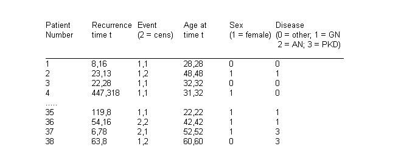
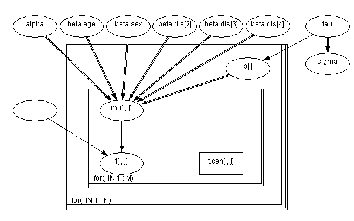
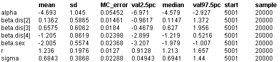

![[kidney0]](kidney0.bmp) Kidney: Weibull regression with
Kidney: Weibull regression with
random efects
McGilchrist and Aisbett (1991) analyse time to first and second recurrence of infection in kidney patients on dialysis using a Cox model with a multiplicative frailty parameter for each individual. The risk variables considered are age, sex and underlying disease (coded other, GN, AN and PKD). A portion of the data are shown below.

We have analysed the same data assuming a parametric Weibull distribution for the survivor function, and including an additive random effect b
i
for each patient in the exponent of the hazard model as follows
t
ij
~ Weibull(r,
m
ij
) i = 1,...,38; j = 1,2
log
m
ij
=
a
+
b
age
AGE
ij
+
b
sex
SEX
i
+
b
disease1
DISEASE
i1
+
b
disease2
DISEASE
i2
+
b
disease3
DISEASE
i3
+ b
i
b
i
~ Normal(0,
t
)
where AGE
ij
is a continuous covariate, SEX
i
is a 2-level factor and DISEASE
ik
(k = 1,2,3) are dummy variables representing the 4-level factor for underlying disease. Note that the the survival distribution is a truncated Weibull for censored observations as discussed in the mice example. The regression coefficients and the precision of the random effects
t
are given independent ``non-informative'' priors, namely
b
k
~ Normal(0, 0.0001)
t
~ Gamma(0.0001, 0.0001)
The shape parameter of the survival distribution r is given a Gamma(1, 0.0001) prior which is slowly decreasing on the positive real line.
The graphical model and
BUGS
language are given below.
Graphical model for kidney example:

BUGS
language for kidney example
model
{
for (i in 1 : N) {
for (j in 1 : M) {
# Survival times bounded below by censoring times:
t[i,j] ~ dweib(r, mu[i,j])C(t.cen[i, j], );
log(mu[i,j ]) <- alpha + beta.age * age[i, j]
+ beta.sex *sex[i]
+ beta.dis[disease[i]] + b[i];
cumulative.t[i,j] <- cumulative(t[i,j], t[i,j])
}
# Random effects:
b[i] ~ dnorm(0.0, tau)
}
# Priors:
alpha ~ dnorm(0.0, 0.0001);
beta.age ~ dnorm(0.0, 0.0001);
beta.sex ~ dnorm(0.0, 0.0001);
# beta.dis[1] <- 0; # corner-point constraint
for(k in 2 : 4) {
beta.dis[k] ~ dnorm(0.0, 0.0001);
}
tau ~ dgamma(1.0E-3, 1.0E-3);
r ~ dgamma(1.0, 1.0E-3);
sigma <- 1 / sqrt(tau); # s.d. of random effects
}
Data
( click to open )
Inits for chain 1
Inits for chain 2
( click to open )
Results
A 1000 update burn in followed by a further 10000 updates gave the parameter estimates
